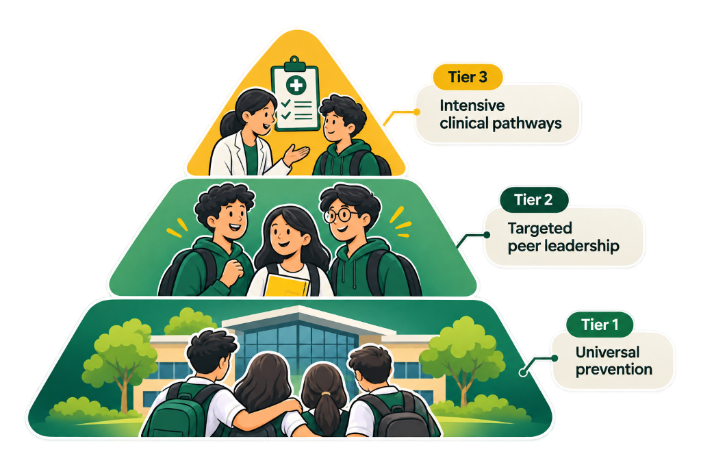

Whole-school multi-tiered model
Tier 1 universal curriculum through to Tier 3 intensive clinical care across Years 7–12.
School context / Applied practice / Real-world school community
How Project Unclouded is applied at Aurevian College, Melton South — a diverse, multilingual community with real opportunities and real challenges.
Tier 1 universal curriculum through to Tier 3 intensive clinical care across Years 7–12.
Moving from “doing to” to “doing with” through Year 9–10 Wellbeing Champions.
Bandura’s four sources: refusal mastery, peer modelling, persuasion, and a safe climate.
Two-way family engagement and multilingual resources for Melton South communities.
01 Executive summary
Project Unclouded is an evidence-informed, whole-school health promotion initiative designed for the socio-demographic profile of Aurevian College in Melton South. Adolescent e-cigarette use is a complex public health concern in Victoria, driven by commercial determinants, deceptive marketing, and misperceived peer norms.
Rather than isolated classroom units or zero-tolerance surveillance, the project operationalises a whole-school system of support aligned with FISO 2.0, HIWS, and the Victorian Healthy Places Framework for Schools.
Build critical media literacy around the tactics used by the vaping industry (flavours, social media, high-nicotine products).
Use Year 9–10 Wellbeing Champions to co-design solutions and lead peer-to-peer education.
Provide multilingual CALD resources by focusing on strengths, family engagement, and cultural relevance.
Connect students with the school nurse, local health services, and headspace through clear referral pathways.
02 Contextual community profile
Aurevian College is a large Victorian secondary school located in Melton South, a rapidly growing and culturally diverse community in Melbourne’s outer west.
High proportion of CALD students, low SEIFA and varied socio-economical backgrounds.
Multiple languages spoken at home, requiring inclusive and accessible health messaging.
A strong sense of community, resilience, and opportunity through student leadership and family engagement.
| Metric | Local context (Aurevian College) |
|---|---|
| Geographical location | Melton South, Melbourne (outer west) |
| ICSEA value range | Around 950 (below Australian average of 1,000) |
| Student population | Approx. 1,200–1,400 secondary students (Years 7–12) |
| CALD percentage | Approximately 53% from culturally and linguistically diverse backgrounds |
| Key languages | English, Punjabi, Arabic, Hindi, Somali, Vietnamese and other languages |
| SEIFA index | Lower socio-economic area (~900–950) |
| Year levels | Years 7–12 |
| Local opportunities | Proximity to community health services and Headspace |
03 Whole-school systemic framework
Years 7–8 OurFutures HPE unit, Unclouded Peer Festival, and perimeter signage under the Tobacco Act 1987.
15 Year 9–10 Wellbeing Champions, co-design workshops, early nurse check-ins, and CALD family liaison support.
Confidential cessation plans and referrals to headspace Melton, Quitline Victoria, or GPs. Suspension is not the default.

04 Expected systemic impact
Increase in nurse self-referrals within 12 months
Reduction in vape-related suspensions
Significant correction of perceived peer vaping rates
Sustained compliance across Healthy Places domains
Explore the literature behind Student Voice, HIWS-5 Self-Efficacy, and Community Partnerships.
Proceed to initiatives →References cited on this page